Ground floor
- Interior living area: 208.92 m²
- Installations: 33.81 m²
- Pool: 118.66 m²
- Covered terraces: 32.65 m²
- Uncovered terraces: 62.97 m²
- Landscaped areas: 91.25 m²
- Lift: 2.13 m²
- Total floor area: 550.39 m²

New Development / Private Access Nueva Andalucía, Marbella
Interior design by Versace Home
Eight villas in Nueva Andalucía, Marbella, on plots of about 2,000 m², developed by RGZ Developers with interiors designed by Versace Home.
Ocho de Oro is a collection of eight villas in the heart of Nueva Andalucía, minutes from Puerto Banús. Each is a bespoke residence on a plot of approximately 2,000 m², with interiors designed by Versace Home.
Versace Home extends the fashion House’s design to furniture, textiles, porcelain, glassware and interior decoration. In these villas the developer’s dossier lists Italian marble, handcrafted Rosenthal ceramics, Versace Home furnishings and the Medusa, Greca and Barocco motifs.
For this project Versace Home created an exclusive pattern, woven into custom fabrics and mosaics, so that each villa carries the same signature.
Eight villas, each on about 2,000 m², each with interiors designed by Versace Home.
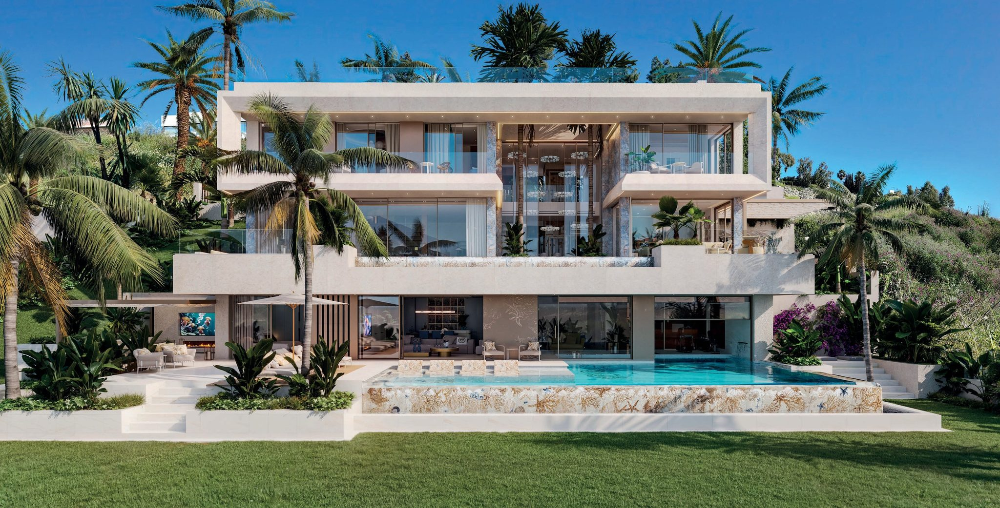
The dossier names the details that carry the Versace signature through the villas. Six of them, each with the render that shows it.
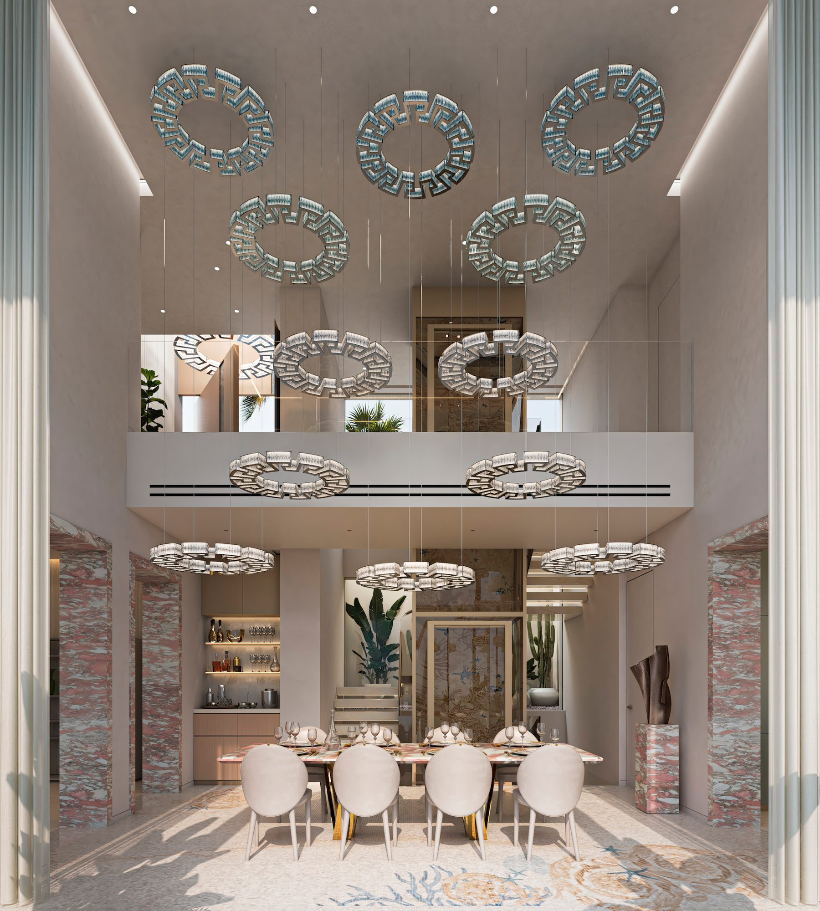
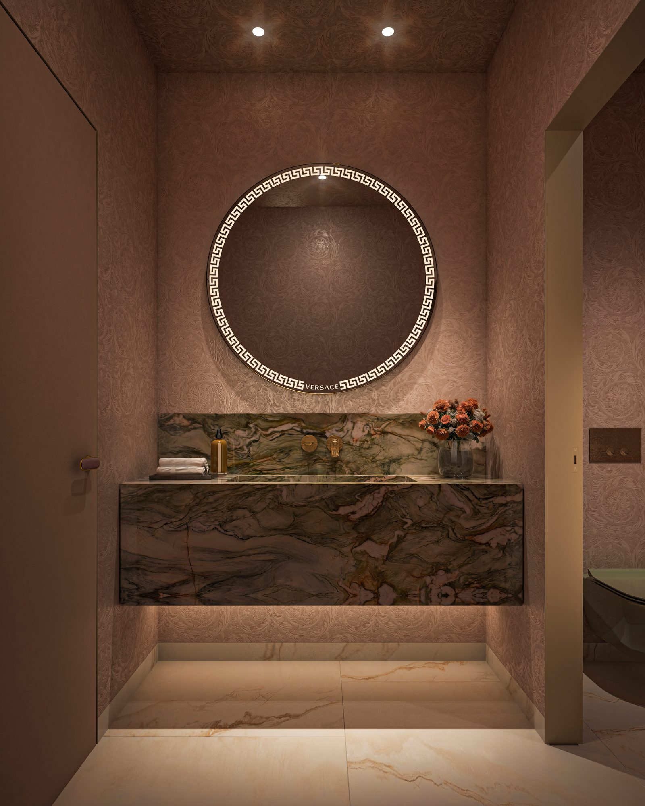
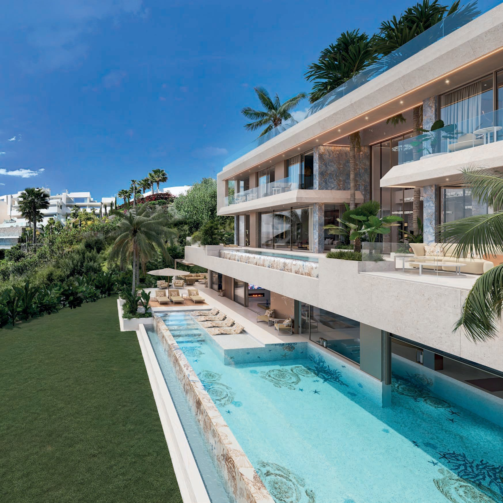
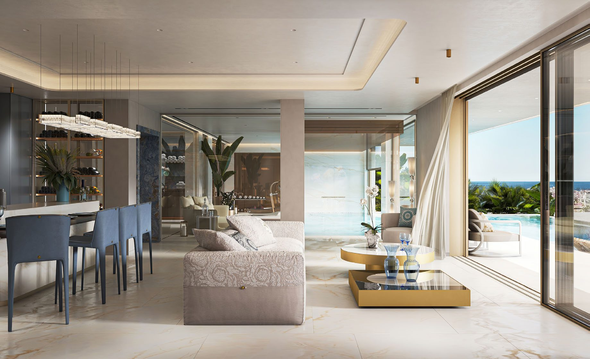
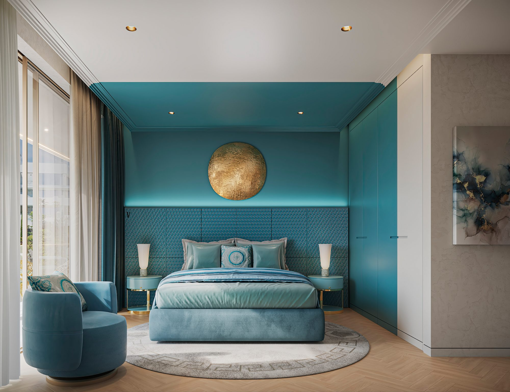
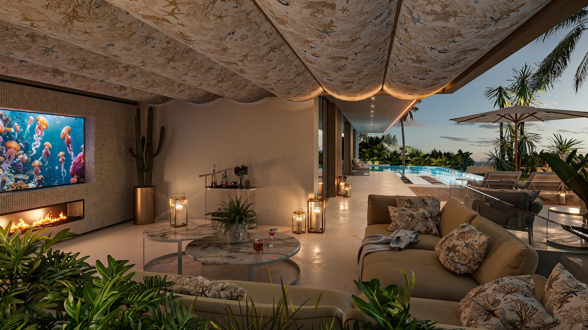
Bespoke Greca chandeliers crown the double-height dining area, framed by marble accents.
In the powder room, rich textures and bold marble surround the Versace Greca mirror.
The cascading infinity pool is laid with custom Versace mosaics, and bespoke mosaic tiles line the pool beside the dining area.
The open-plan living area, where lounge, bar and spa connect to the terrace, is framed by gold accents and Versace fabrics.
Each bedroom has its own palette: soft Versace tones in the main bedroom, red, white and pink with metallic accents, soft blue, and rich turquoise with gold.
Over the outdoor cinema lounge, a custom Versace canopy shelters the fireplace and the integrated screen.
Every villa has five bedrooms and six bathrooms on a ground, first and second floor, with a private rooftop solarium above and a private lift in the house.
The plans and their area tables are the developer’s, for one villa. They count pools, terraces and landscaped areas, and the four level totals add up to 1,616.39 m², while the dossier prints 1,639 m² as the total. The price list gives each villa’s total built area as 1,102 or 1,103 m². These are different measures, and the documents do not reconcile them.
Sixteen renders from the developer’s dossier, in the order you would meet the rooms, each with the detail the dossier names.
Inside each villa, an indoor pool connects to the spa and the fitness area, so that wellness becomes part of daily life.
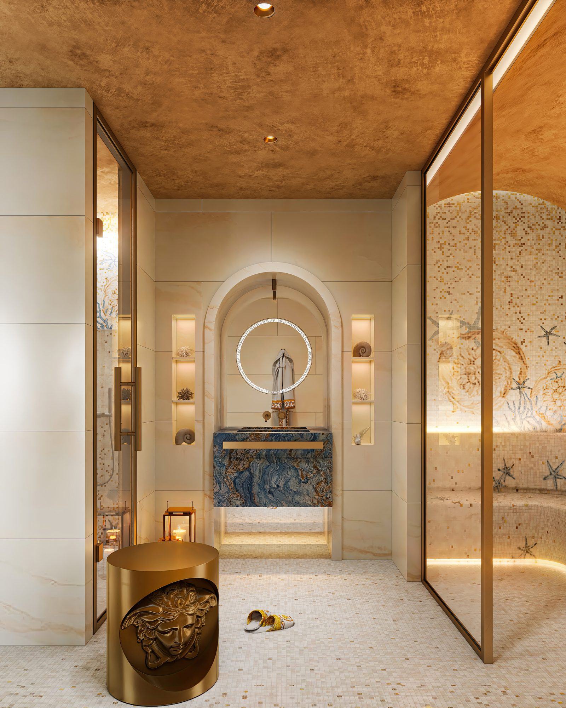
A spa room for rejuvenation and self-care, with a vaulted gilded ceiling and an arched niche.
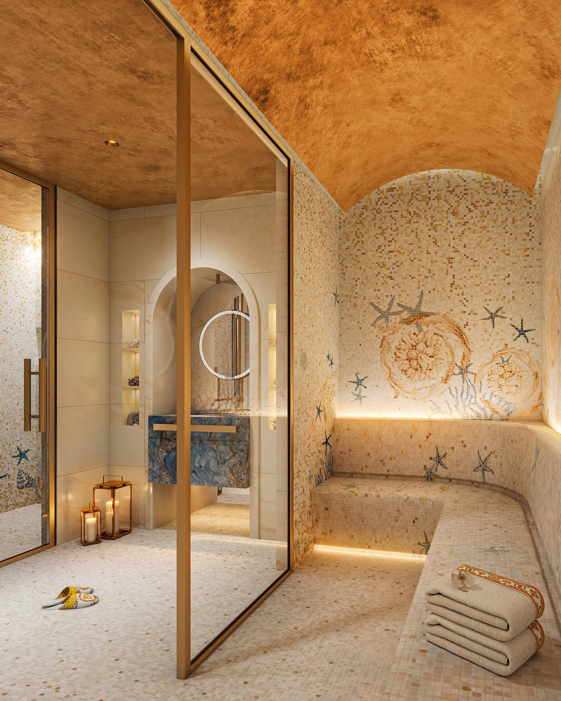
A hammam among the spa spaces, with mosaic walls, a built-in bench and a vaulted gilded ceiling.
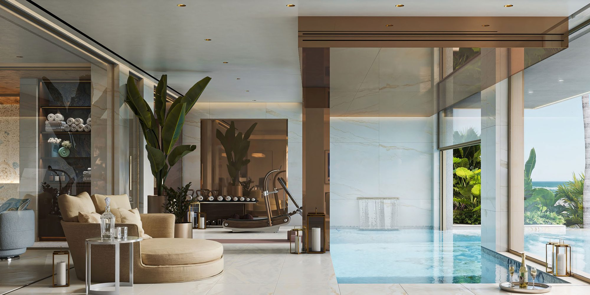
An indoor pool framed by floor-to-ceiling mirror and marble-clad walls, connected to the spa and the fitness area.
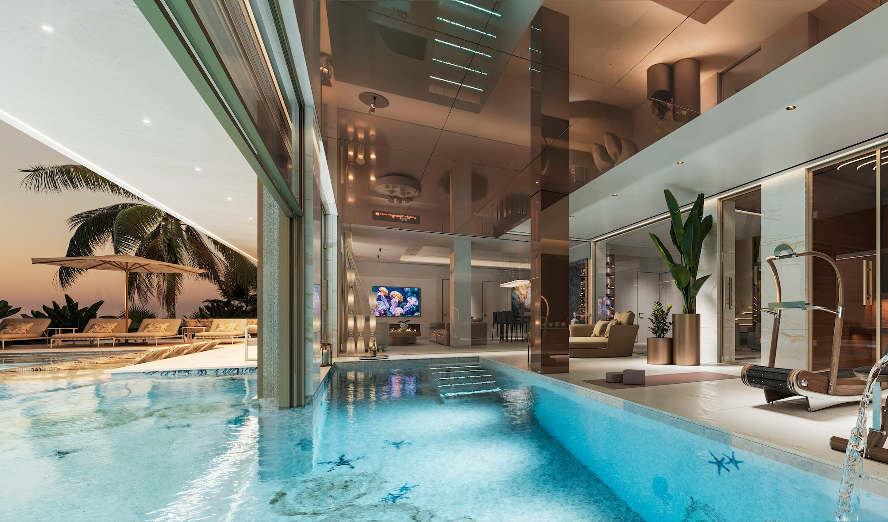
At dusk the indoor-outdoor pool glows beneath soft lighting, blurring the line between spa, lounge and terrace.
Outside, the dossier shows a cascading pool, a sunken firepit lounge, an outdoor cinema lounge, al fresco dining and a rooftop with its own lounge and dining space.
A cascading infinity pool with custom Versace mosaics flows alongside layered terraces.
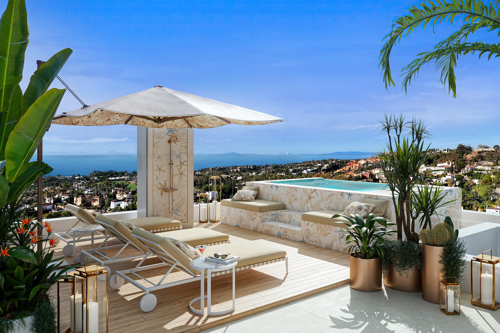
A private rooftop escape with sun loungers, an open-air shower and a plunge pool.
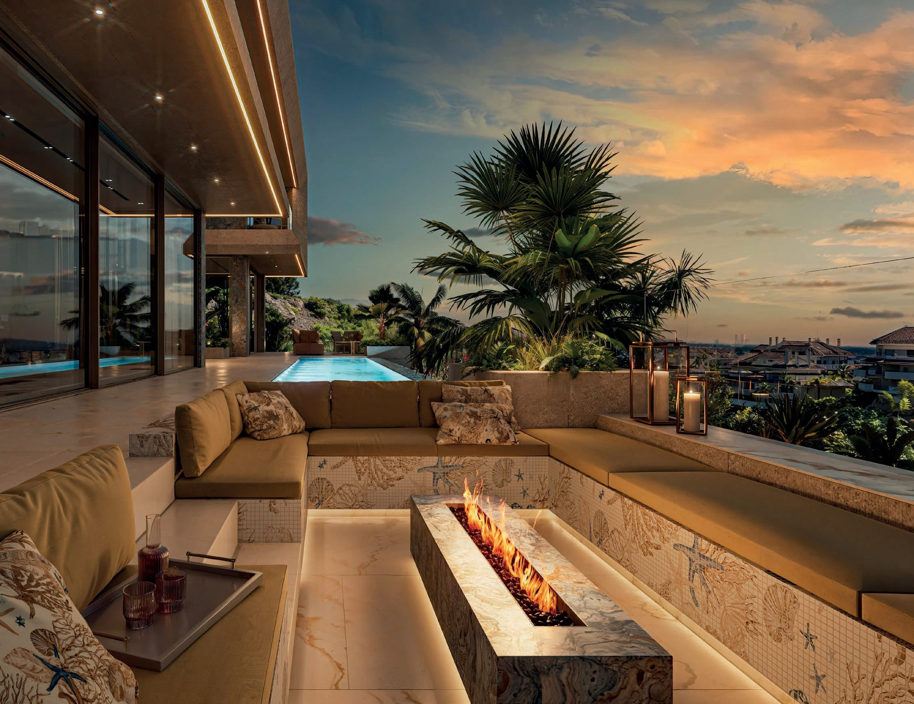
A sunken terrace with a mosaic-clad firepit, surrounded by greenery and panoramic views.
An alfresco retreat with a custom Versace canopy, a fireplace and an integrated screen.
The master plan shows the eight villas side by side, each with its own garden, behind a gated entrance with 24-hour security. Six are on the developer’s current price list; the other two are reserved.
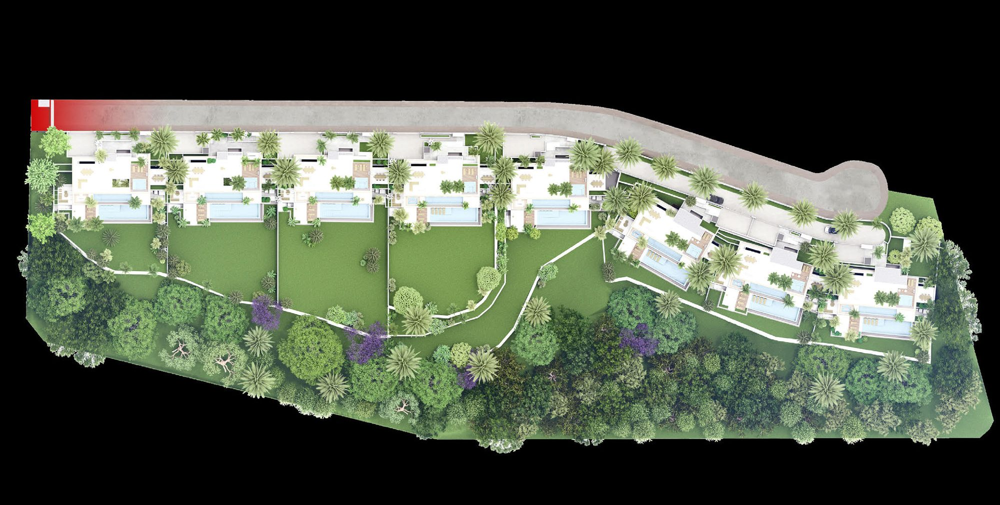
€13,000,000
5 bed / 6 bath · 1,102 m² total built
Available
€12,500,000
5 bed / 6 bath · 1,102 m² total built
Available
€14,600,000
5 bed / 6 bath · 1,102 m² total built
Available
Not on the current price list
Reserved
€13,250,000
5 bed / 6 bath · 1,102 m² total built
Available
€11,500,000
5 bed / 6 bath · 1,103 m² total built
Available
€11,700,000
5 bed / 6 bath · 1,103 m² total built
Available
Not on the current price list
Reserved
Prices are in euros and exclude purchase costs.
Guide prices confirmed from the developer's live price list, shown excluding costs. Prices may change without notice. Nueva Living will reconfirm the selected villa, surfaces, payment terms and legal documentation before you proceed.
Ocho de Oro sits in the heart of Nueva Andalucía, minutes from Puerto Banús and Marbella’s Golf Valley.
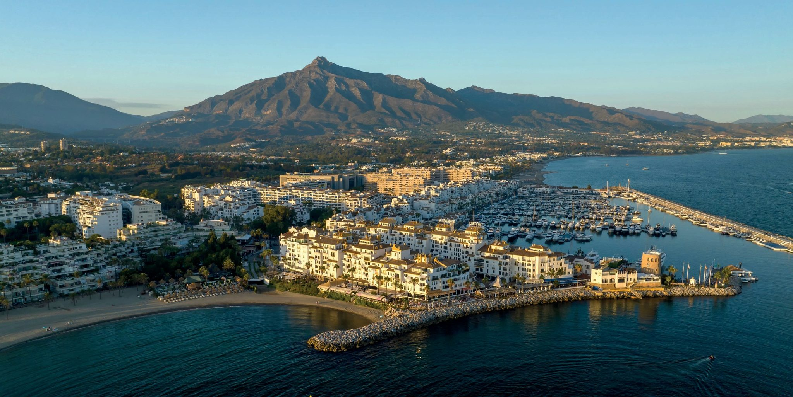
The companies the developer’s dossier names for the project.
The home collection of the Versace fashion House, which extends its design to furniture, textiles, porcelain, glassware and interior decoration. Its first homeware pieces were launched in 1992.
Created to meet the demand for exclusive luxury properties on the Costa del Sol, with a focus on Marbella, and combining the expertise and reputation of the Copasa Group.
A construction and services group with over three decades in civil works, an annual portfolio above €2 billion and operations in 15 countries, according to the dossier.
The images below are the developer’s computer-generated visuals of the villas, their interiors, amenities and setting.
Yes. There are no restrictions on non-Spanish nationals buying property in Spain, whether as a resident or non-resident.
An NIE (Numero de Identificacion de Extranjero) is a tax ID number required for any property purchase in Spain by a non-Spanish national. Nueva Living can guide you through obtaining one before you reserve.
Buyers typically budget for transfer tax or VAT, notary fees, land registry fees and legal fees on top of the purchase price. Nueva Living provides a full, current cost breakdown for your chosen residence before you reserve.
Many Spanish banks offer mortgages to non-resident buyers, typically financing a portion of the purchase price. Exact terms depend on the bank and your personal financial profile.
Off-plan means the development is still under construction and is usually sold with staged payments through to completion. A completed property is ready to view and move into now.
Reservation and payment structures vary by development and are set out in full before you reserve. Nueva Living reconfirms the current schedule for your chosen residence at every step.
This depends on the individual development and local regulations, which can vary by community and municipality. Nueva Living will confirm the specific rules for a development before you reserve.
Yes, we strongly recommend independent legal representation for any property purchase in Spain. Nueva Living can put you in touch with independent lawyers experienced in Costa del Sol property.
The developer’s dossier states that the interiors are designed by Versace Home, with Italian marble, mosaics, Versace Home furnishings and the Medusa, Greca and Barocco motifs. The villas are developed by RGZ Developers.
The developer’s dossier shows the villas furnished with Versace Home pieces, but its footnote says that interior furniture is not included and that finishes, materials and fittings are illustrative. We confirm in writing what is included before any reservation.
The collection has eight villas. Six are on the developer’s current price list, from €11,500,000 to €14,600,000, and the other two are reserved.
Yes. The developer’s dossier includes the plans of one villa, level by level: the ground, first and second floors and the rooftop solarium. They are on this page.
Share your details and we will send you the current project information.
Computer-generated, non-contractual images supplied by the developer. The developer’s dossier states that renderings of façades, common areas and other spaces are indicative and may be modified, that interior furniture is not included, that finishes, materials, colours, fittings and equipment are illustrative, and that the documentation may change for technical, legal or commercial reasons.
Nueva Living is an independent sales agency. Versace and Versace Home are trademarks of their owners. The imagery is the developer’s non-contractual computer-generated visuals.